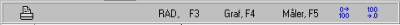
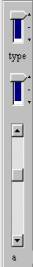
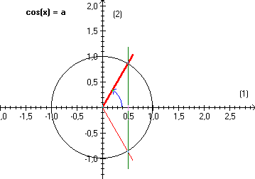
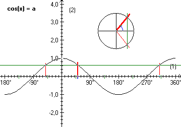
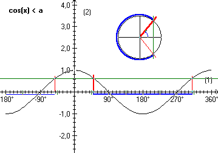
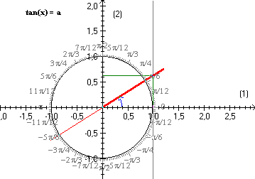

Denne simulation indeholder løsning af de trigonometriske grundligninger cos(x) = a, sin(x) = a og tan(x) = a og løsning af de tilsvarende uligheder cos(x) < a og cos(x) > a…
I panelet til venstre skiftes øverst mellem cos, sin og tan, i midten mellem =, > og <, og nederst ænders parameteren a. a kan varieres fra –2 til 2 i trin på 0,01.
|
 |
|
|
 |
 |
I panelet foroven vælges forskellige visninger:
Radianer eller grader, Grafisk løsning, indtegning af vinkelmåler og decimaler.
Parameter a og de markerede løsninger fremgår af statuslinien.
Vælges grafisk løsning tegnes grafen fra –180° til 360° (-p til 2p), og samtidigt vises grundløsningerne på en lille enhedscirkel.

Bemærk, at lommeregnerens løsning, x0, markeres med en fed streg.

Bemærk, at intervallet [x0 ; 360°- x0] indtegnes med en fed streg.

Her er valgt radianer, derfor radianer på enhedscirklen. I de viste eksempler er a = 0,63.